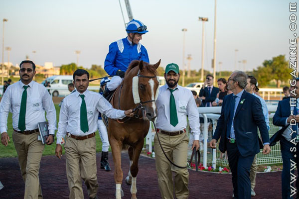
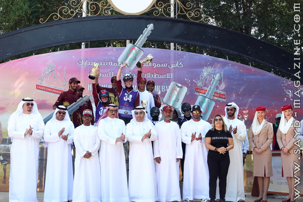
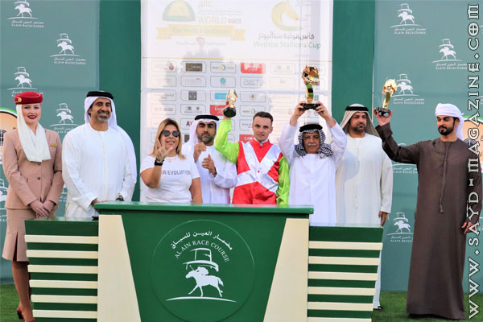

كان اسبوعا حافلا لسباقات لها الوقع الكبير في عالم الخيول العربية الاصيلة، والتي رسّخها مهرجان الشيخ منصور بن زايد العالمي للخيول العربي الاصيلة على مدى 11 عاما من العمل المتواصل والجّدي.. وقد شهد السباق وتوج الفائزين في المهرجان سعادة اللواء الدكتور أحمد ناصر الريسي، رئيس اتحاد الإمارات للفروسية، وميرزا الصايغ مدير مكتب سمو الشيخ حمدان بن راشد آل مكتوم، ود. عبدالله الريسي مدير عام الأرشيف الوطني،والشيخ خالد آل خليفة سفير مملكة البحرين لدي الدولة، ود. عبدالرحيم العوضي سفير الدولة لدي بولندا، ولارا صوايا المدير التنفيذي لمهرجان سمو الشيخ منصور بن زايد آل نهيان للخيول العربية الأصيلة مدير عام الوثبة ستاليونز، رئيس الاتحاد الدولي لأكاديميات سباقات الخيل "ايفهرا" رئيس لجنة سباقات السيدات بالاتحاد الدولي "افهار"، واحمد السويدي المدير التنفيذي في اتحاد الفروسية ومحمد الحضرمي مدير الفعاليات، ومحمد عبدالله ممثل المسعود للسيارات. "مشهور الخالدية" بطل جوهرة تاج زايد توج الشيخ محمد والشيخ حمدان والشيخة لطيفة أنجال سمو الشيخ منصور بن زايد آل نهيان،الفائز البطل الأمير عبدالعزيز بن احمد بن عبدالعزيز آل سعود مالك الجواد "مشهور الخالدية" الذي فاز بلقب النسخة الخامسة من سباق جوهرة تاج زايد لمسافة 1600 متر، البالغ جائزته 5 ملايين درهم، صوفي فان ايجلين بطلة كأس "أم الإمارات" للسيدات توجت الفارسة الهولندية صوفي فان ايجلين على صهوة "فيدليو فون سدبادن اوكس" لإسطبلات "بن حم" بطلة لسباق كأس سمو الشيخة فاطمة بنت مبارك للسيدات لمسافة 100 كلم، الذي أقيم بقرية الإمارات العالمي للقدرة بالوثبة،وسجلت البطلة زمناً وقدره 3:40:21 ساعة، وبمعدل سرعة بلغ 27.22 كلم في الساعة. وحققت إسطبلات "بن حم " المركز الثاني أيضاً عبر الفارسة السلوفاكية ميشيلا سوبكوفا على صهوة "ماتيا دو كافالون" مسجلة زمناً وقدره 3:40:22 ساعة، وبمعدل سرعة بلغ 27.22 كلم في الساعة. وحلت ثالثة الفارسة خديجة احمد من جزر القمر على صهوة "ميستكو اكس ار" لإسطبلات محمد سعيد النيادي. فيما حلت في المركز الرابع الفارسة ميثاء محمد على صهوة توجار" لاسطبلات سعيد جابر. وأشاد اللواء الدكتور احمد ناصر الريسي رئيس اتحاد الفروسية، بالمناسبة المهمة لكأس سمو الشيخة فاطمة بنت مبارك للسيدات وقال بان السباق شهد مشاركة كبيرة من كافة الفارسات المحليات والدوليات، وعدد كبير من الإسطبلات الخاصة، ونحن فخورون بهذا التجمع الذي يؤكد مكانة الدولة في سباقات القدرة في القرية التي تعد نموذجا مثاليًا للشفافية. وأشادت لارا صوايا بالدعم اللامحدود الذي يقدمه سمو الشيخ منصور بن زايد ال نهيان، وسمو الشيخة فاطمة بنت مبارك لرياضة القدرة والمخصصة للسيدات. كما اشادت بالمشاركة الكبيرة التي شهده السباق والتي بلغت 93 فارسة من مختلف الاسطبلات الخاصة في الدولة، وشهدت تنافس كبير بين المتنافسات واستحقت اسطبلات بن حم المركزين الاول والثاني. "مدرب" بطل جائزة الشهداء نجح الجواد "مدرب" لسمو الشيخ حمدان بن راشد آل مكتوم نائب حاكم دبي وزير المالية، وبإشراف اروين شاربي وبقيادة جيم كرولي في الفوز بالشوط الافتتاحي لمسافة 2200 متر، على لقب جائزة الشهداء، ومسجلًا 2:20:10 دقيقة. "جوال الريف" يخطف كأس الوثبة خطف الجواد "جوال الريف" لحسن صالح الحمادي وبإشراف احمد إبراهيم بن عامر الشميلي، وبقيادة ريتشارد مولن لقب الجولة الأولى لكأس الوثبة ستاليونز لملاك الإسطبلات الخاصة لمسافة 1400 متر، بعد أداء مثير متفوقًا بفارق 0,75 طول، ومسجلًا 1:34:18 دقيقة. "سليم الريف" المفاجأة وحقق المهر "سليم الريف" لإسطبلات العجبان، وبإشراف عبدالله الحمادي، وبقيادة جيسوس روزاليس، غير المرشح، مفاجأة من العيار الثقيل بالفوز بالشوط الثالث لمسافة 1600 متر على لقب سباق جائزة شهداء الإمارات، ومسجلًا 1:48:88 دقيقة. الإيطالي لاكوبيني بطل المتدربين وظفر الفارس الايطالي ريكاردو لاكوبيني على صهوة "بينونة" لصاحب السمو رئيس الدولة، وبإشراف ايريك ليمارتنيل، بلقب مونديال "أم الإمارات" للفرسان المتدربين لمسافة 1600 متر، ومسجلًا 1:47:65 دقيقة. الدنماركية لارسن بطلة السيدات ومنح الجواد "اسياد" الثنائية لخيول رئيس الدولة، بإشراف ايريك ليمارتنيل، حين توجت الفارسة الدنماركية فيكتوريا لارسن بلقب مونديال "أم الإمارات" للسيدات، مسجلة زمنا وقدره 1:47:98 دقيقة.
